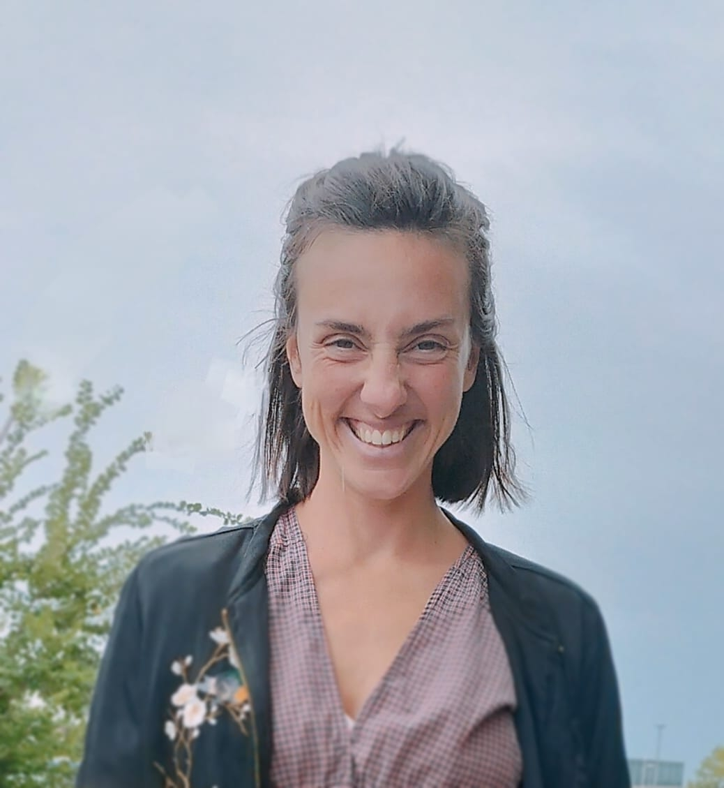

Chi sono
Sono Maria Cristina Bussani.
Il mio percorso nasce dall’incontro tra psicologia, educazione, ricerca e spiritualità.
Negli anni ho sviluppato un approccio che integra ascolto profondo, lavoro simbolico, dimensione corporea e accompagnamento terapeutico.
Accompagno persone, gruppi e giovani adulti nei processi di cambiamento, crisi, trasformazione, ricerca di significato e riconnessione con sé stessi.
Credo che ogni essere umano custodisca dentro di sé una parte saggia che desidera semplicemente essere ascoltata.
Per me la cura non consiste nel “riparare” una persona, ma nel creare uno spazio sufficientemente sicuro perché possa tornare ad ascoltare sé stessa.
Un luogo in cui parola, corpo, emozione e spiritualità possano lentamente ritrovare dialogo.
La trasformazione autentica non nasce dalla forza, ma dalla presenza.Percorso, ricerca e formazione
Nel corso degli anni ho attraversato ambiti differenti — psicologia, educazione, ricerca internazionale, pratiche terapeutiche e accompagnamento relazionale — costruendo progressivamente un approccio interdisciplinare orientato alla persona nella sua interezza.
Formazione accademica
Laurea in Scienze dell’Educazione con lode, Laurea Specialistica in Management Internazionale tra Italia e Germania e percorso magistrale in Psicologia del Lavoro e delle Organizzazioni.
Approccio terapeutico
Formazione clinica multidisciplinare presso PsycheLabs (Trieste), con integrazione di approcci sistemici, corporei, simbolici, relazionali e narrativi.
Aree di accompagnamento
Crescita personale, ansia, lutto, maternità, relazioni, processi decisionali, spiritualità, ricerca di significato e trasformazione identitaria.
Esperienza educativa
Laboratori con bambini, adolescenti e giovani adulti, workshop sulla resilienza, percorsi di consapevolezza, psicomotricità e accompagnamento relazionale.
Ricerca internazionale
Attività di ricerca sulla spiritualità infantile, embodied education e costruzione di significato, con partecipazione a conferenze internazionali in Europa, Stati Uniti e America Latina.
Metodi e strumenti
Costellazioni sistemiche, meditazione guidata, lavoro biografico, pratiche corporee, ascolto simbolico, lavoro sul sogno e approccio narrativo.
Workshop e percorsi significativi
Alcuni dei percorsi, workshop e contesti formativi che hanno contribuito alla mia ricerca personale e professionale.
- Workshop “Becoming Bamboos” sulla resilienza United World College Adriatic — Duino Aurisina (2025)
- Formazione professionale sulla decodifica dei sogni Psychealos — Trieste
- Costellazioni sistemiche e organizzative Percorso continuo tra Italia e Austria
- Conferenze internazionali Spiritualità infantile, embodied education, benessere e processi di significato
- Sessioni WATT — Walk, Think and Talk Camminate terapeutiche nella natura tra movimento, parola e ascolto interiore
Ricerca e pubblicazioni
📘 La spiritualità nel lavoro Ricerca dedicata al rapporto tra significato, organizzazioni, identità professionale e dimensione spirituale dell’esperienza lavorativa.
Scarica📗 La spiritualità dei bambini da 0 a 2 anni Studio dedicato alle forme precoci di spiritualità, relazione e costruzione del senso nella prima infanzia.
ScaricaContinuo a considerare la ricerca, la formazione e l’incontro umano come parti vive dello stesso cammino.
Un cammino che non cerca perfezione, ma autenticità.
Buen Camino ✨